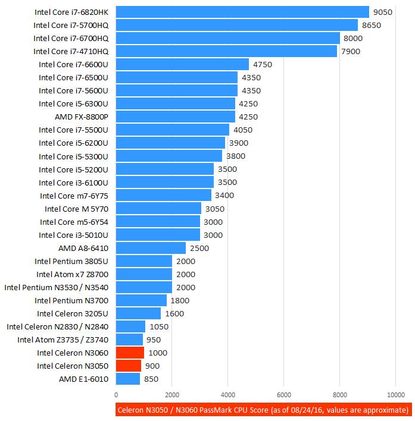

Problem 1: Weak Storage
Chromebooks typically have 32 gigabytes of local storage. Google encourages chromebook users to store their data in the cloud instead. If chromebook users did want to store their data locally, they would be much more limited.

Problem 1: Weak Storage
Chromebooks typically have 32 gigabytes of local storage. Google encourages chromebook users to store their data in the cloud instead. If chromebook users did want to store their data locally, they would be much more limited.
Problem 2: Weak CPUs
Most chromebooks run on older CPUs like the Intel Celeron, Pentium, or Core m3. These CPUs require little power and are quite slow. Chrome OS doesn't require much processing power to begin with, but when you're trying to run certain applications you'll notice a considerable lack of speed.
Problem 3: Breaks Easily
HP chromebooks break quite easily, at least from personal experience. A while ago my chromebook fell off my desk at school, and now the screen glitches out constantly. Students can also disassemble them with ease, making them a distraction if they do it during classtime. My chromebook also has several keys on the keypad that have ciesed function completely. I know fellow students who have had much worse issues with their chromebooks.